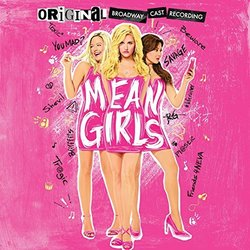

IT HAS BEEN RELEASED!!!!!!!!!!! I REPEAT, IT HAS BEEN REALSED!!!!!!
WE MUST PROTECT THIS CAST. THE SOUNDTRACK IS SO GOOD. THEY ARE ALL SO TALENTED. IT IS A MUST LISTEN.
THE BEST SONGS HAVE TO BE THE MATHELETES SONGS!! THEY ARE TOO PRECIOUS FOR THIS WORLD.
THE OTHER SONGS ARE JUST AS GOOD TOO!

The world is a place.
A place filled with idiots.
I wonder why's that?
Amber is not in class on this date
RIP Finger Prince
He was beloved by all
May he joi on the other finger prints in finger print heaven.
"Finger Prince has gone through times of sadness and joy. He has lasted through laughter and tears.
Favorite Quote: Naptime for Borgelorp
1. There are many places to go to at any time of the day.
2. Broadway shows are just a foot away.
3. It is a very beautiful place.
4. The borough is diverse.
5. You are able to eat food that you cannot find anyhwere else.
6. You have transportation 24/7 without having to have a car.
7. There is always something new happening in the city.
8. You live in the borough that has the famous Central Park. You can live in the city with the option of having someplace green to go.
9. Manhattan has some of the best views and skyline.
10. There are many career opportunities in this borough alone.
Ben Tyler Cook must be protected at all cost. He is a smol bean. He is a precious human being. He can act, sing, and dance without even trying. He is a goregous human being. We must also protect his friends as they are smol beans also (like Josh Burrage).